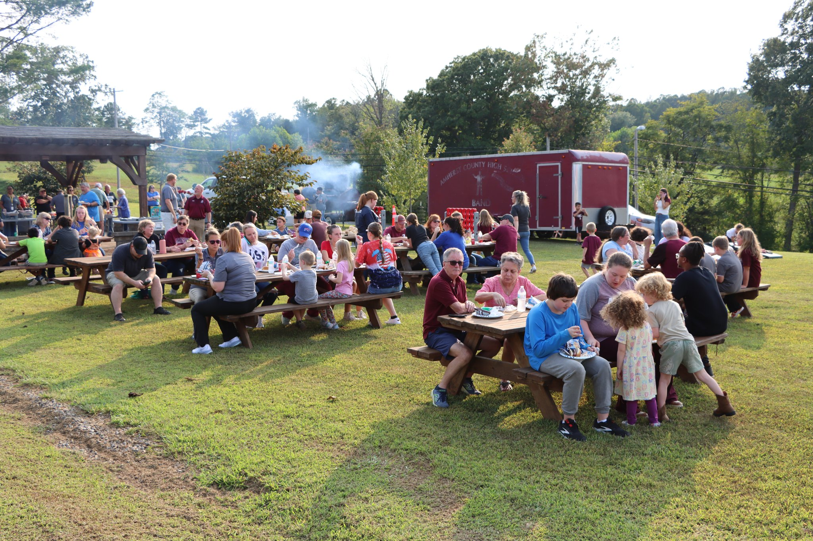
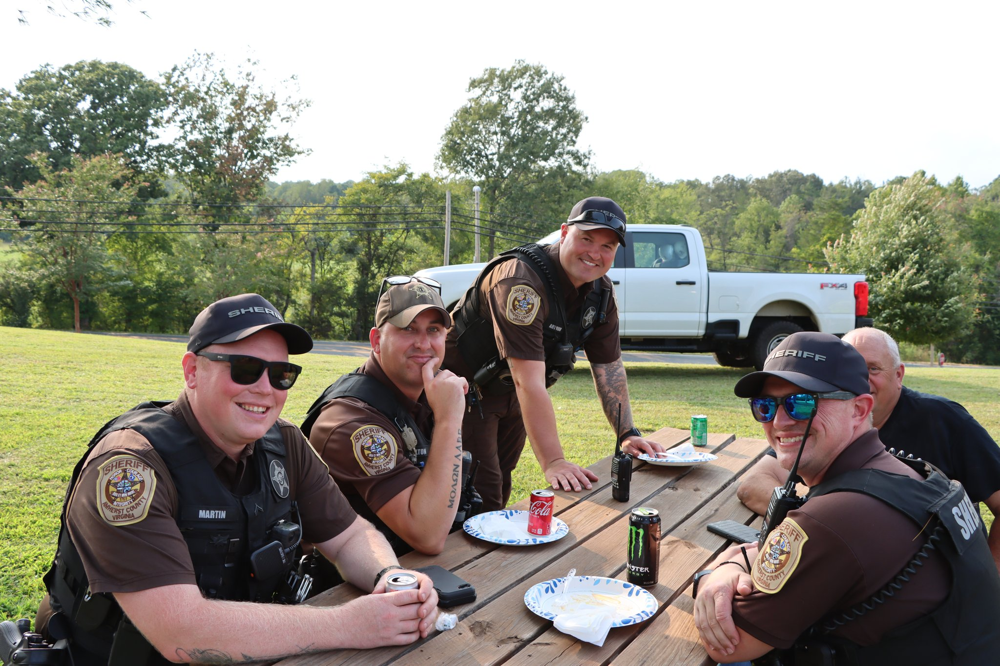
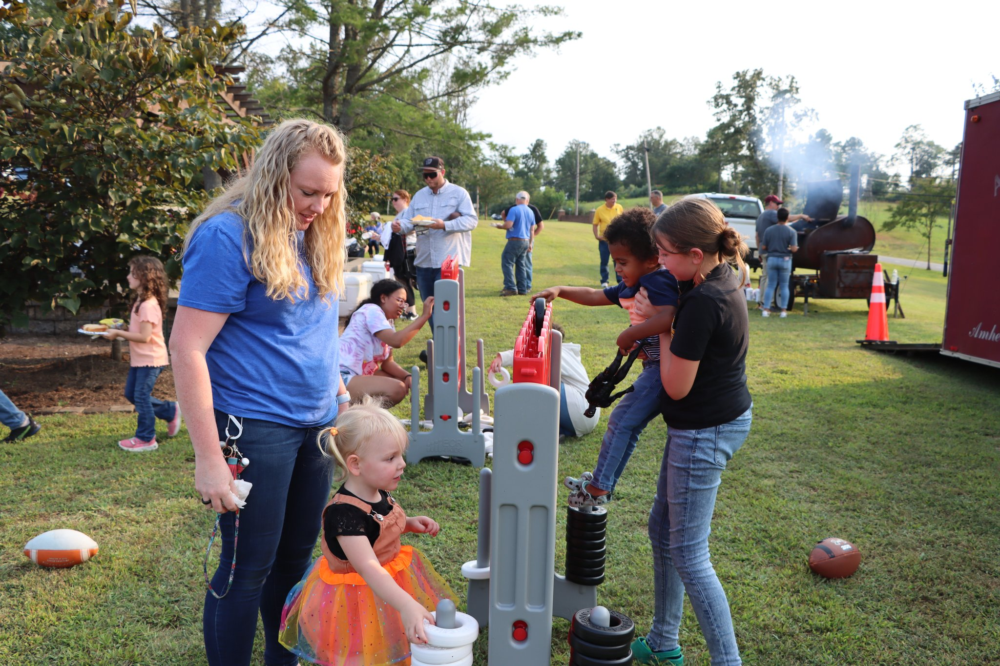
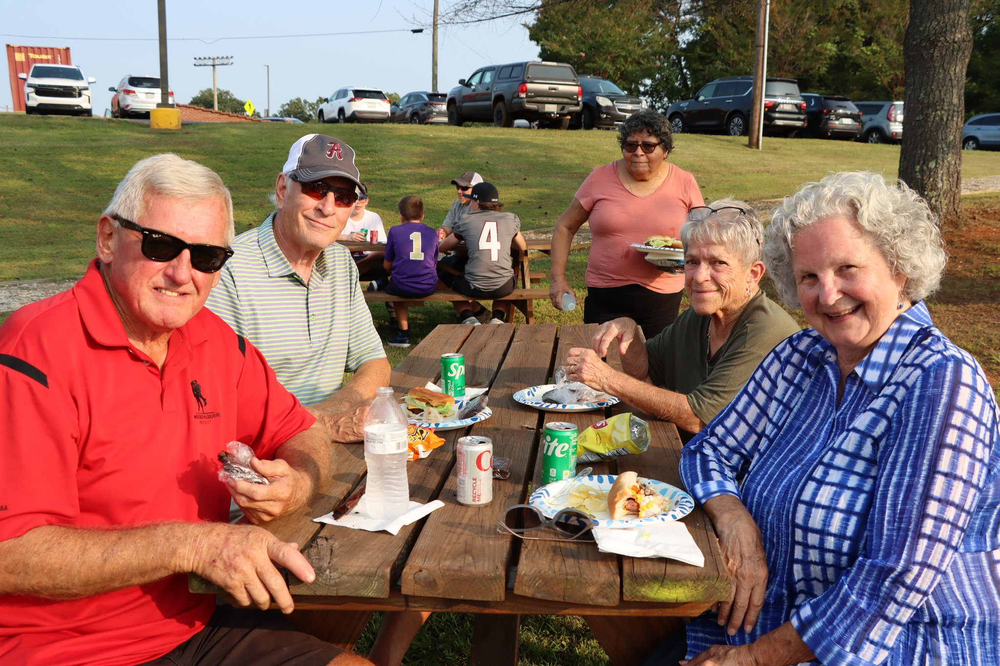
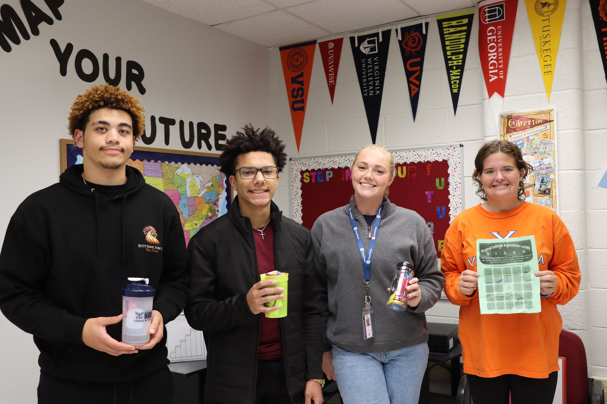

Cohort 1 📍 Region 5
Amherst County is where career-connected learning meets Community Schools. Across both Amherst County High School and the Amherst Education Center, the division is working to reduce chronic absenteeism, improve academic performance, and lower discipline referrals. At the high school, students engaged in 354 work-based learning experiences in the first quarter alone, from internships and student-run businesses to supervised agricultural programs and clinical placements. Eleven colleges and universities made on-site visits or hosted field trips, giving students a firsthand look at where those pathways lead. Opening of the new ACHS addition and Community Tailgate drew families, staff, and community partners together across both sites.
At the Amherst Education Center, the division's alternative program, family engagement has grown through Open House events, monthly art classes, and Brag Day events, an open celebration where students' progress and achievements take center stage.
Community Engagement Across Amherst This Fall
36 Events | 2,000 Attendees




The Community Tailgate at Amherst County High School drew 311 attendees on a September evening, filling the pavilion and field with families eating together while division administrators manned a grill and served food to attendees. The event brought law enforcement to the table as neighbors with sheriff's deputies joining families, eating alongside them rather than in any official capacity. Activity stations ran between the food areas, and the crowd spanned generations, from toddlers to grandparents. The tailgate was one of 36 community events Amherst hosted during the first quarter of the year, drawing 2,000 total attendees across the division.

During College Application Week, students were encouraged to explore postsecondary opportunities through application support and college awareness activities. Throughout the first quarter, eleven colleges and universities made on-site visits or hosted field trips in the first quarter, including Washington and Lee, Longwood, Old Dominion, VCU, VMI, UVA, Liberty, JMU, University of Lynchburg, Randolph College, and Central Virginia Community College. All four branches of the US military are also invited monthly to meet with students as they explore their postsecondary options. The high school held a College Senior Night in September, followed by a FAFSA and Financial Aid Night in October. Each event moved students one step closer to a postsecondary plan, from exploring options to completing applications.
Amherst County exemplifies VCSI Stage 5.1: Honor the Ideals & Values of the Community School. Amherst County fosters connections with families and community partners, which is vital to healthy collaboration.